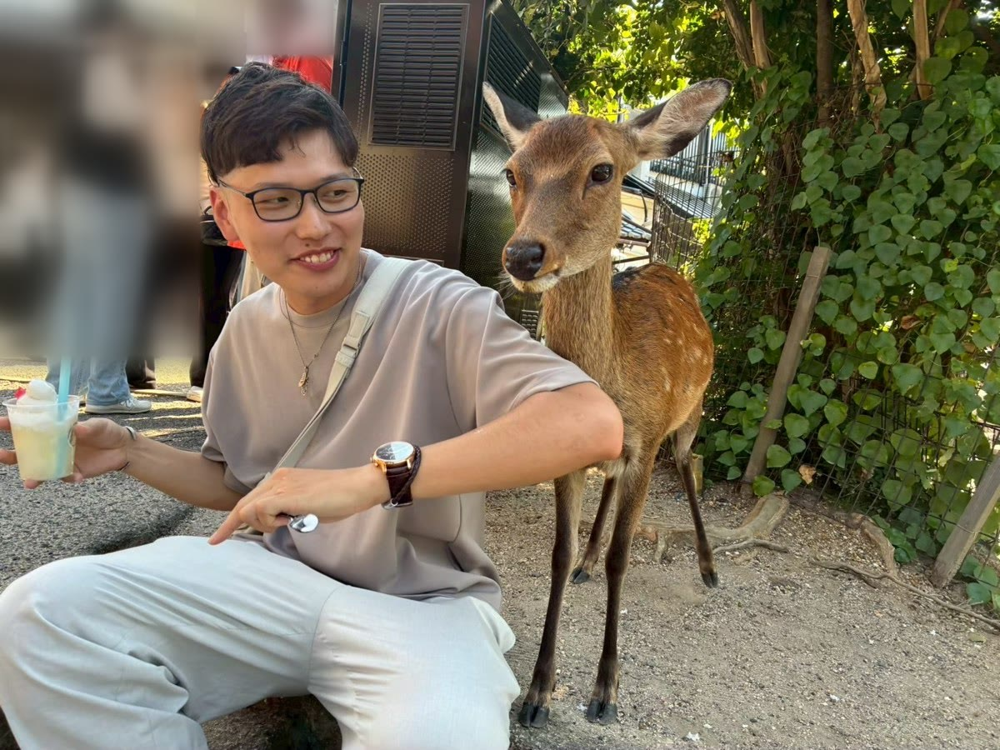

Profile
プロフィール
TAKAHIRO UEDA
上田 貴大
AI Consultant｜大阪
京都産業大学を卒業後、通信業界の営業を経験。いまは会社員として、飲食店2店の運営に携わっています。
店で要る仕組みは、プログラミング未経験から、AIを道具にして自作してきました。
うまくいったことも、やめたことも、noteにそのまま書いています。
得意なのは、人と話すこと。「何を頼めばいいか分からない」という段階でも、気軽に声をかけてください。
経歴
京都産業大学 卒業
人材派遣会社に勤務（通信業界の営業職）
退職後、友人が代表を務める夜パフェ専門店の開業に携わる
派遣先の企業に就職し、2年で主任に
現在、会社員として手巻き寿司店・アサイーボウル店の運営に携わりながら、店で使う仕組みを自作
Personal
仕事を離れると

休みの日は、サウナと温泉巡り。体を動かすことも好きです。
夜は飲みに行ったり、アニメを見たり。お店の話も、雑談も、気軽にどうぞ。